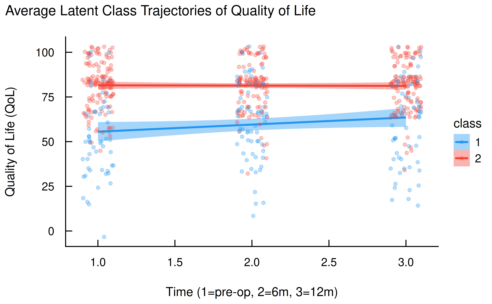

An Introduction to Growth Mixture Models with brms and easystats
The easystats team
2025-07-24
Source:vignettes/practical_growthmixture.Rmd
practical_growthmixture.RmdIntroduction
Growth Mixture Models (GMMs) are a powerful statistical technique used to identify unobserved subgroups (latent classes) within a population that exhibit different developmental trajectories over time. They are a subclass of latent class analysis and are particularly useful in longitudinal research to understand heterogeneity in how individuals change.
This vignette demonstrates how to conduct a Growth Mixture Model
using the brms package for Bayesian modeling and the
easystats ecosystem (particularly modelbased,
parameters, and see) for easy interpretation
and visualization.
Loading Packages and Data
First, we load the necessary packages. brms is for model
fitting, and easystats is a suite of packages that
simplifies the entire process of statistical analysis and
visualization.
The Dataset
We will use the qol_cancer dataset, which is included in
the datawizard package. This dataset contains longitudinal
data on the health-related quality of life (QoL) of cancer patients,
measured at three time points: pre-surgery, and 6 and 12 months
post-surgery.
The dataset includes the following variables:
-
ID: A unique identifier for each patient. -
QoL: The outcome variable, a Quality of Life score. -
time: The measurement time point (1 = pre-surgery, 2 = 6 months, 3 = 12 months). -
hospital: The hospital where the operation was performed. -
education: The patient’s education level (low, mid, high). -
age: The patient’s age (standardized).
Let’s prepare the data by converting the time and
hospital variables to factors.
Fitting the Growth Mixture Model
The core of a GMM in brms is the mixture()
family, which allows us to model the outcome variable as a mixture of
distributions. In our case, we hypothesize that there are distinct
subgroups of patients with different QoL trajectories. We will fit a
model with two latent classes (nmix = 2).
The model formula
QoL ~ time + hospital + education + age + (1 + time | ID)
specifies that QoL is predicted by several fixed effects
(time, hospital, etc.) and a random effects
structure (1 + time | ID). This random effects part is
crucial for growth models, as it allows each patient (ID)
to have their own baseline QoL (random intercept 1) and
their own rate of change over time (random slope time).
Running the Model
Fitting a Bayesian mixture model can be computationally intensive.
For the purposes of this vignette, we will download a pre-fitted model
from the easystats repository.
# Download the pre-fitted model
brms_mixture_2 <- download_model("brms_mixture_2")If you wish to fit the model yourself, you can use the following code. Be aware that it may take several minutes to run.
# In case of convergence issues, specifying priors can help. The priors are
# set for the population-level intercept of each mixture component (mu1, mu2).
# prior <- c(
# prior(normal(0, 10), class = Intercept, dpar = mu1),
# prior(normal(0, 10), class = Intercept, dpar = mu2)
# )
set.seed(1234)
brms_mixture_2 <- brms::brm(
formula = QoL ~ time + hospital + education + age + (1 + time | ID),
data = qol_cancer,
family = mixture(gaussian, nmix = 2), # Gaussian mixture with 2 classes
chains = 4, # Number of MCMC chains
iter = 2000, # Total iterations per chain
cores = 4, # Use 4 CPU cores
seed = 1234, # For reproducibility
silent = 2, # Suppress Stan progress
refresh = 0
)You can use different factors to predict the outcome for each group in your data. To do this, simply create a separate prediction formula for each part of your model. For instance, you could use one set of factors to predict the quality of life for “Group 1” and a different set for “Group 2”. You can even use factors to predict which group someone is likely to belong to. While this guide won’t cover the details, a code example at the end shows you how.
Interpreting the Model
With our model fitted, we can now use the easystats
functions to understand the results.
Predicted Class Membership
Our first step is to determine which latent class each patient
belongs to at each time point. We can use the
estimate_prediction() function from the
modelbased package with
predict = "classification".
out <- estimate_prediction(brms_mixture_2, predict = "classification")
head(out)
#> Model-based Predictions
#>
#> time | hospital | education | age | ID | Predicted | Probability
#> ------------------------------------------------------------------
#> 3 | 1 | mid | -3.60 | 1 | 1.00 | 0.72
#> 1 | 1 | mid | -3.60 | 1 | 2.00 | 0.51
#> 2 | 1 | mid | -3.60 | 1 | 1.00 | 0.50
#> 1 | 1 | mid | 1.40 | 10 | 2.00 | 0.97
#> 2 | 1 | mid | 1.40 | 10 | 2.00 | 0.97
#> 3 | 1 | mid | 1.40 | 10 | 2.00 | 0.97
#>
#> time | 95% CI | Residuals
#> -------------------------------
#> 3 | [0.00, 1.00] | 40.67
#> 1 | [0.00, 1.00] | 39.67
#> 2 | [0.00, 1.00] | 32.33
#> 1 | [0.86, 1.00] | 81.33
#> 2 | [0.85, 1.00] | 81.33
#> 3 | [0.89, 1.00] | 81.33
#>
#> Variable predicted: QoL
#> Predictions are on the classification-scale.The output table shows the Predicted class for each
observation, along with the Probability of that
classification. Now, let’s join these predicted classes back to our
original dataset for visualization.
Visualizing Latent Class Trajectories
Now we can visualize the average QoL trajectories for each latent class. This is the most intuitive way to understand the results of a GMM.
ggplot(d, aes(x = as.numeric(time), y = QoL, color = class, fill = class)) +
geom_smooth(method = "lm") +
geom_point(alpha = 0.3, position = position_jitter(width = 0.1)) +
labs(
title = "Average Latent Class Trajectories of Quality of Life",
x = "Time (1=pre-op, 2=6m, 3=12m)",
y = "Quality of Life (QoL)"
) +
theme_modern(show.ticks = TRUE) +
scale_color_material() +
scale_fill_material()
The plot clearly reveals two distinct groups:
- Class 1 (blue): This group starts with a lower Quality of Life, but shows a steady improvement over the 12-month period.
- Class 2 (red): This group starts with a much higher Quality of Life and maintains this high level throughout the observation period.
Inspecting Model Parameters
To understand what predicts the outcome within each class, we can
inspect the model parameters using model_parameters() from
the parameters package.
model_parameters(brms_mixture_2, diagnostic = NULL, drop = "time")
#> # Class 1
#>
#> Parameter | Median | 95% CI | pd
#> -------------------------------------------------
#> (Intercept) | 48.16 | [ 18.63, 63.83] | 99.70%
#> hospital1 | 3.82 | [-17.62, 19.56] | 56.20%
#> educationmid | 9.32 | [ 3.04, 24.36] | 98.65%
#> educationhigh | 13.04 | [ -3.75, 24.99] | 94.10%
#> age | 0.48 | [ -0.83, 1.20] | 84.00%
#>
#> # Class 2
#>
#> Parameter | Median | 95% CI | pd
#> -------------------------------------------------
#> (Intercept) | 75.51 | [ 63.81, 81.50] | 100%
#> hospital1 | -1.29 | [-10.41, 8.28] | 56.70%
#> educationmid | 3.98 | [ 0.14, 10.17] | 97.65%
#> educationhigh | 11.53 | [ 5.79, 19.47] | 100%
#> age | -0.37 | [ -0.65, 0.29] | 86.25%The output is neatly separated by class. We can see, for example,
that higher education (educationmid,
educationhigh) is associated with a higher QoL in both
classes, but the magnitude of the effect differs.
Estimated Marginal Means
We can dive deeper by estimating the marginal means of
QoL for different predictor levels within each class. Let’s
look at the effect of education. The
predict = "link" argument is essential for mixture models,
as it computes the means for each class separately.
estimate_means(brms_mixture_2, by = "education", predict = "link")
#> Estimated Marginal Means
#>
#> education | Median (CI) | pd | Class
#> -----------------------------------------------
#> low | 53.92 (33.41, 63.72) | 100% | 1
#> low | 74.43 (67.38, 78.20) | 100% | 2
#> mid | 64.11 (49.39, 72.54) | 100% | 1
#> mid | 79.19 (73.50, 82.46) | 100% | 2
#> high | 63.10 (44.67, 76.24) | 100% | 1
#> high | 86.32 (79.66, 93.25) | 100% | 2
#>
#> Variable predicted: QoL
#> Predictors modulated: education
#> Predictors averaged: time, hospital, age (0.22), ID
#> Predictions are on the link-scale.This table gives us the expected mean QoL for each
education level, conditional on class membership. For instance, a
patient with “low” education in Class 2 has an estimated mean QoL of
74.43, whereas a similar patient in Class 1 has an
estimated mean QoL of 53.92.
Comparing Levels with Contrasts
We can also compute contrasts between predictor levels to understand the magnitude of differences.
If we compute contrasts without predict = "link",
estimate_contrasts() averages the effects across both
classes, giving a general sense of inequality.
estimate_contrasts(
brms_mixture_2,
contrast = "education"
)
#> Marginal Contrasts Analysis
#>
#> Level1 | Level2 | Median (CI) | pd
#> ----------------------------------------------
#> mid | low | 7.95 (2.60, 11.32) | 99.65%
#> high | low | 12.69 (7.17, 17.13) | 100%
#> high | mid | 5.67 (1.02, 8.57) | 98.95%
#>
#> Variable predicted: QoL
#> Predictors contrasted: education
#> Predictors averaged: time, hospital, age (0.22), ID
#> Contrasts are on the response-scale.More interestingly, we can set predict = "link" to get
contrasts both within and between classes. This
provides a very detailed picture.
estimate_contrasts(
brms_mixture_2,
contrast = "education",
predict = "link"
)
#> Marginal Contrasts Analysis
#>
#> Level1 | Level2 | Median (CI) | pd
#> ------------------------------------------------
#> 1 mid | 1 low | 9.32 ( 3.04, 24.36) | 98.65%
#> 1 high | 1 low | 13.04 ( -3.75, 24.99) | 94.10%
#> 2 low | 1 low | 19.34 ( 7.55, 40.32) | 99.95%
#> 2 mid | 1 low | 27.05 ( 15.71, 44.71) | 100%
#> 2 high | 1 low | 37.41 ( 23.25, 52.04) | 100%
#> 1 high | 1 mid | 0.19 (-14.77, 9.54) | 51.20%
#> 2 low | 1 mid | 10.00 ( -0.73, 24.01) | 96.80%
#> 2 mid | 1 mid | 16.88 ( 7.02, 29.15) | 99.45%
#> 2 high | 1 mid | 24.44 ( 13.22, 35.72) | 100%
#> 2 low | 1 high | 11.78 ( -1.48, 27.71) | 73.90%
#> 2 mid | 1 high | 17.61 ( 2.51, 32.07) | 99.85%
#> 2 high | 1 high | 24.59 ( 10.05, 39.85) | 100%
#> 2 mid | 2 low | 3.98 ( 0.14, 10.17) | 97.65%
#> 2 high | 2 low | 11.53 ( 5.79, 19.47) | 100%
#> 2 high | 2 mid | 7.55 ( 3.15, 11.33) | 99.90%
#>
#> Variable predicted: QoL
#> Predictors contrasted: education
#> Predictors averaged: time, hospital, age (0.22), ID
#> Contrasts are on the link-scale.The output is rich with information. For example,
2 high | 2 low shows the contrast between high and low
education within Class 2 (an increase of 11.53 in
QoL), while 2 low | 1 low compares a patient with low
education in Class 2 to a patient with low education in Class 1 (a
difference of 19.34).
Quantifying Inequality
Finally, estimate_contrasts() has a powerful
comparison = "inequality" argument. This calculates the
average absolute difference between all levels of a predictor, providing
a single number that quantifies the overall disparity associated with
that variable. Let’s compare the inequality associated with
education versus hospital.
estimate_contrasts(
brms_mixture_2,
contrast = c("education", "hospital"),
comparison = "inequality"
)
#> Marginal Inequality Analysis
#>
#> Parameter | Median (CI) | pd
#> -------------------------------------
#> education | 8.46 (4.85, 11.42) | 100%
#> hospital | 1.40 (0.11, 8.87) | 100%
#>
#> Variable predicted: QoL
#> Predictors contrasted: education, hospital
#> Differences are on the response-scale.The results are striking. The inequality median for
education is 8.46, while for
hospital it is only 1.40. This suggests that a
patient’s education level is associated with far greater disparities in
their quality of life trajectory than the hospital where they received
treatment.
Conclusion
Growth Mixture Models are an excellent tool for uncovering hidden
heterogeneity in longitudinal data. By using brms to fit
these complex models and the easystats ecosystem to process
and interpret them, researchers can move from complex output to
actionable insights with ease. This vignette has shown how to identify
latent classes, visualize their trajectories, and quantify the effects
of covariates in a straightforward and intuitive workflow.
Supplement
The estimation of latent class membership in finite mixture models
within the R package brms is not governed by a single,
fixed mechanism. Instead, brms provides a flexible and
powerful framework that allows the researcher to explicitly define the
data-generating process, including the factors that determine class
membership. The central question of whether class membership is
determined by the outcome’s trajectory, by predictors, or if predictors
are only relevant after classification, can be addressed directly: all
of these scenarios represent valid modeling choices that can be
implemented within brms. In a mixture model, the
probabilities of belonging to each latent class - the mixing
proportions, denoted as \theta - are
themselves parameters of the model. Consequently, they can be modeled as
a function of predictors.
Here’s a summary of how to specify these different scenarios in
brms:
| Scenario | Research Question | Example brms Formula |
|---|---|---|
| Simple Mixture | “Are there two or more distinct latent groups in my outcome data, ignoring all predictors?” | bf(y ~ 1, family = mixture(gaussian, nmix = 2)) |
| Predicting Component Means | “Does a treatment (x) affect the outcome
differently for the two latent groups?” |
bf(y ~ 1, mu1 ~ x, mu2 ~ x, family = mix)
or simply bf(y ~ x, family = mix)
|
| Predicting Mixing Proportion | “Does a demographic variable (z) predict
which latent group an individual is likely to belong to?” |
bf(y ~ 1, theta2 ~ z, family = mix) |
| Full Distributional Model | “How do treatment (x) and demographics
(z) jointly influence both the outcome within each group
and the probability of group membership?” |
bf(y ~ 1, mu1 ~ x, mu2 ~ x, theta2 ~ z, sigma ~ group, family = mix) |
Example Codes
# this model is actually equivalent to the one we used in the vignette
# but it allows for different predictors for each class
brms::brm(
bf(
# formula for individual trajectories
QoL ~ 1 + (1 + time | ID),
# predictors for class 1
mu1 ~ time + hospital + education + age + (1 + time | ID),
# predictors for class 2
mu2 ~ time + hospital + education + age + (1 + time | ID),
family = mixture(gaussian, nmix = 2)
),
data = qol_cancer,
chains = 4, # Number of MCMC chains
iter = 1000, # Total iterations per chain
cores = 4, # Use 4 CPU cores
seed = 1234, # For reproducibility
refresh = 0
)
# in this example, we also model the class membership probabilities
brms::brm(
bf(
# formula for individual trajectories
QoL ~ 1 + (1 + time | ID),
# predictors for class 1
mu1 ~ time + hospital + education + age + (1 + time | ID),
# predictors for class 2
mu2 ~ time + hospital + education + age + (1 + time | ID),
# predictors for class membership probabilities
theta1 ~ hospital + education,
theta2 ~ hospital + education + age,
family = mixture(gaussian, nmix = 2)
),
data = qol_cancer,
chains = 4, # Number of MCMC chains
iter = 1000, # Total iterations per chain
cores = 4, # Use 4 CPU cores
seed = 1234, # For reproducibility
refresh = 0
)